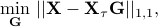
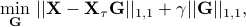
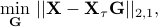
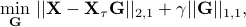
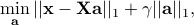
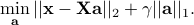

Daniele Giacobello – SoftwareSpeech Dereverberation based on Convex Optimization Algorithms for Group Sparse Linear Prediction [code]This code is designed around solving the following convex optimization problems for speech dereverberation: 



using the Alternating direction method of multipliers (ADMM). The algorithmic background, motivation, etc., are described in: D. Giacobello, T. L. Jensen, “Speech Dereverberation based on Convex Optimization Algorithms for Group Sparse Linear Prediction”, in Proc. 43th IEEE International Conference on Acoustics, Speech, and Signal Processing (ICASSP), Calgary, Canada, April 2018. [pdf | poster] If you use this implementation, please give reference to the above paper. COPYRIGHT: GNU General Public License v3.0 Fast Algorithms for High-Order Sparse Linear Prediction based on the Douglas-Rachford (DR) method and the Alternating Direction Method of Multipliers (ADMM) [code]This code provides fast algorithms to solve the sparse linear prediction problem 
using the following methods:
The algorithmic background, motivation, etc., are described in: T. L. Jensen, D. Giacobello, T. van Waterschoot, M. G. Christensen, “Fast Algorithms for High-Order Sparse Linear Prediction with Applications to Speech Processing”, Speech Communication, Special Issue on Advances in Sparse Modeling and Low-rank Modeling for Speech Processing, vol. 76, pp. 143-156, February 2016. [pdf | presentation] If you use this implementation, please give reference to the above paper. COPYRIGHT: 2014-2015 Tobias L. Jensen, Department of Electronic Systems, Aalborg University, Denmark. slp_sm is free software: you can redistribute it and/or modify it under the terms of the GNU General Public License as published by the Free Software Foundation, either version 3 of the License, or (at your option) any later version. slp_sm is distributed in the hope that it will be useful, but WITHOUT ANY WARRANTY; without even the implied warranty of MERCHANTABILITY or FITNESS FOR A PARTICULAR PURPOSE. See the GNU General Public License for more details. A Real-time Convex Optimization Sparse Linear Prediction Solver [code]This code is designed around solving the convex optimization problems: 
It also includes scripts for compiling, linking, testing, timings, and benchmarking procedures. The algorithmic background, motivation, etc., are described in: T. L. Jensen, D. Giacobello, M. G. Christensen, S. H. Jensen, M. Moonen, “Real-time Implementations of Sparse Linear Prediction for Speech Processing”, in Proc. 38th IEEE International Conference on Acoustics, Speech, and Signal Processing (ICASSP), Vancouver, Canada, May 2013. [pdf | poster] If you use this implementation, please give reference to the above paper. COPYRIGHT: 2012 Tobias L. Jensen and Daniele Giacobello, Department of Electronic Systems, Aalborg University, Denmark. Licensed under the Apache License, Version 2.0 (the “License”); you may not use this file except in compliance with the License. Unless required by applicable law or agreed to in writing, software distributed under the License is distributed on an “AS IS” BASIS, WITHOUT WARRANTIES OR CONDITIONS OF ANY KIND, either express or implied. See the License for the specific language governing permissions and limitations under the License. |